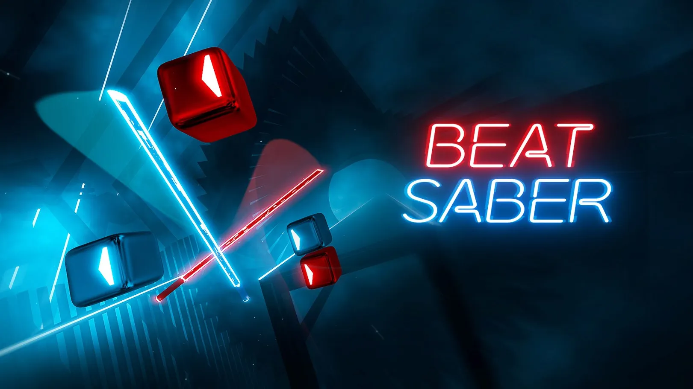

Anatomy of the "Best" VR Game: The Immersion
Factor
Half-Life: Alyx
Developed by Valve, Half-Life: Alyx is widely considered the "killer app" for PC VR. It’s
a full-length, narrative-driven, first-person shooter that set a new benchmark for what a
AAA-quality VR game could be.
Alyx ’s success is measured by its impact on the industry and its critical reception.
Critical Acclaim: The game holds a 98% positive rating on Steam and a
93 on Metacritic, making it one of the highest-rated games of all time, VR or
otherwise.
Industry Impact: Alyx was a platform seller. Data showed that the Valve Index
headset (Valve’s own hardware) saw its sales more than double in the quarter of
the game’s release.
Mechanics: Its physics-based puzzles and "gravity gloves" are not gimmicks; they
are core to the experience, creating intuitive interactions that are only possible in
VR.
Beat Saber
If Alyx is the "core" experience, Beat Saber (Beat Games) is the "mainstream" phe-
nomenon. It is a rhythm game where players slice musical blocks with laser swords. Its
simplicity is its genius.
Beat Saber ’s brilliance is its accessibility. It’s a perfect "first-time" VR experience and a
high-skill-ceiling rhythm game.
Commercial Success: It is one of the most successful VR games in history. As
of 2023, it has sold over 10 million copies across all platforms.
Platform Dominance: It was the first VR-only app to gross over $100
million in revenue on the Meta Quest platform alone.
Retention: It is a "go-to" app for VR users, driving high engagement through
official music packs (DLCs) from artists like Lady Gaga and Linkin Park.

Half-Life VS BeatSaber
The "best" VR game depends on the goal. Half-Life: Alyx is the "best" narrative and
technical showcase, proving VR can host deep, complex stories. Beat Saber is the "best"
pure gameplay experience, a system-seller that is instantly understandable, infinitely
replayable, and a perfect ambassador for the technology.